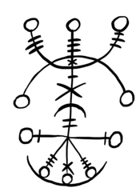

Recurse Center again!
Posted on March 29, 2022
Recurse Center AGAIN

I applied! I got in! I’m back, hurrah!
The Plan
- learn Rust
- build some tools to improve meaningful social interactions on the internet No, I don’t yet know what this means, but I have several ideas that’ll be in my next blog post.
What’s changed?
Recurse Center is virtual the past two(?) years, so I’m not in the physical space. I like staring at my screens and typing on my cool keyboard, but I miss in person interactions. Maybe I can find some DC area RCers?